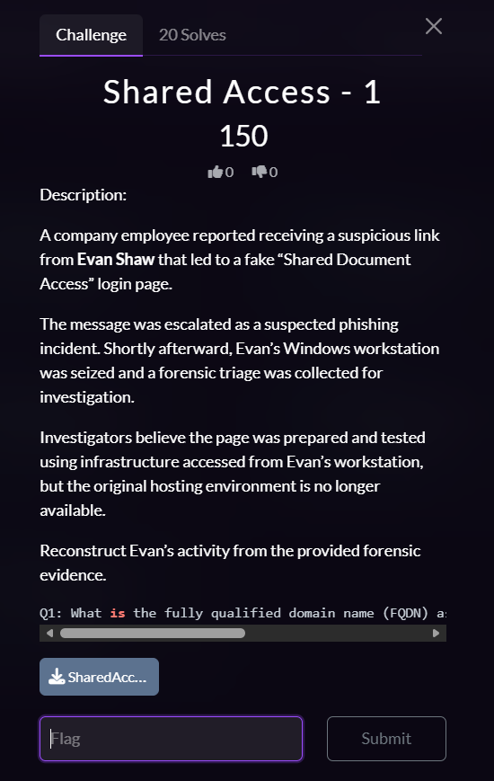
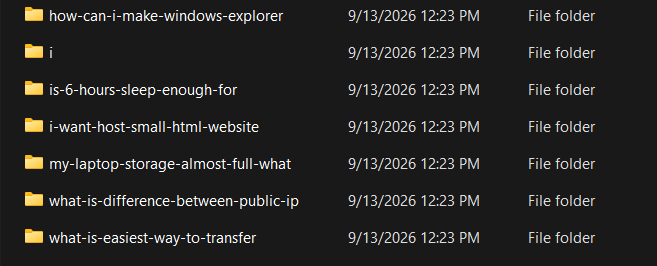
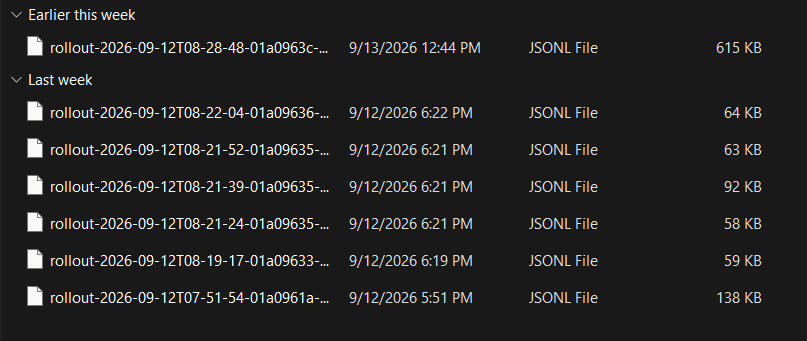
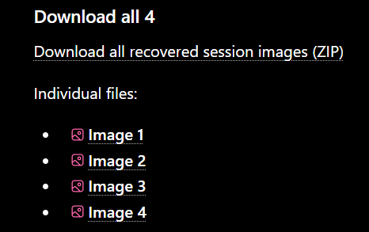
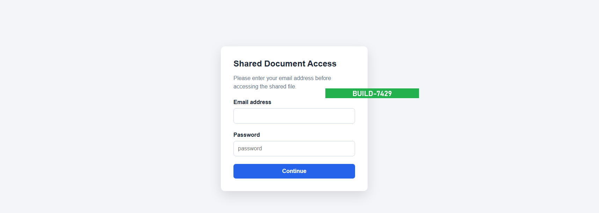
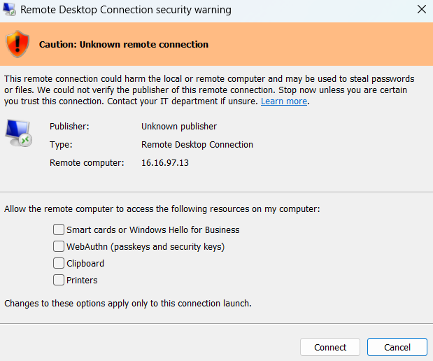
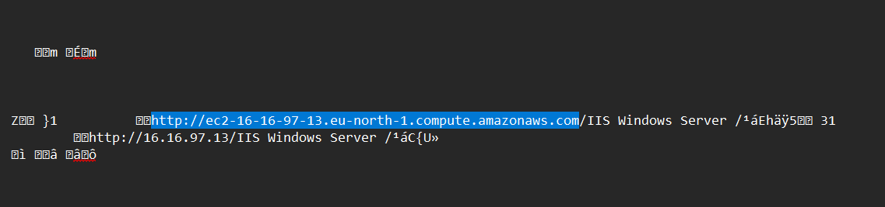

Introduction
Hello everyone! It's me again, and this time I'm working on a new CTF called Victories, powered by the IEEE Mansoura Student Branch and EG-CERT.

In this challenge, we are given access to an attacker machine and need to answer two questions:
- What is the fully qualified domain name (FQDN) associated with the remote system Evan connected to?
- What build identifier was associated with the phishing page Evan was testing?
Starting From Evan's Profile
I started by exploring:
C:\Users\EvanShaw
While examining the user profile, I noticed a suspicious .codex
directory. Since the challenge involved investigating how the phishing
infrastructure was created, I decided to investigate the Codex-related artifacts.
I searched for other Codex-related directories and found:
C:\Users\EvanShaw\Documents\CodexThere was also a date-based directory:
C:\Users\EvanShaw\Documents\Codex\2026-09-12This looked interesting, so I started investigating its contents.

C:\Users\EvanShaw\Documents\Codex\2026-09-12 directory.
Following The Codex Session Trail
Inside the directory, I found a session named:
\i-want-host-small-html-websiteThe folder itself was empty, so I followed the connection between the Codex project directory and the session history stored under:
C:\Users\EvanShaw\.codex\sessionsI then navigated to:
C:\Users\EvanShaw\.codex\sessions\2026\09\12This directory contained the JSON session files for the activity on that date.

C:\Users\EvanShaw\.codex\sessions\2026\09\12.
After examining the available sessions, I identified the relevant session:
rollout-2026-09-12T07-51-54-01a0961a-7f31-7631-a88d-7e07d3b91eb0I also found another session file containing uploaded images:
rollout-2026-09-12T08-28-48-01a0963c-47ff-79f1-a7a1-db94650d2b91Since the session contained multiple images, I extracted them and examined them individually.

One of the extracted images contained the information required to answer the second question.

We solved the second question first, but that's completely fine. Now let's move on to the FQDN.
Finding The Remote System
While continuing the investigation, I noticed an RDP connection artifact inside:
C:\Users\EvanShaw\DocumentsThe RDP connection referenced the IP address:
16.16.97.13
16.16.97.13.
I moved to the browser artifacts located under:
C:\Users\EvanShaw\AppData\Local\Microsoftand specifically investigated Microsoft Edge's browsing history.
The relevant Edge history database was located at:
C:\Users\EvanShaw\AppData\Local\Microsoft\Edge\User Data\Default\HistoryAfter examining the database, I found the hostname associated with the remote system.

Answer Summary
| # | Question | Answer |
|---|---|---|
| 01 | FQDN associated with the remote system Evan connected to | ec2-16-16-97-13.eu-north-1.compute.amazonaws.com |
| 02 | Build identifier associated with the phishing page Evan was testing | BUILD-7429 |
Conclusion
This challenge took some time to investigate, but it was a really interesting one. The useful path was not a single artifact, but the connection between Codex session history, extracted embedded images, RDP traces, and browser history.